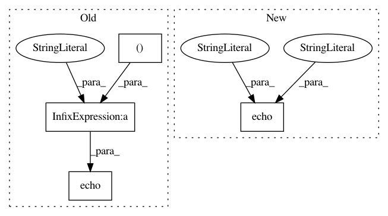

e06b04eacb0eefdd392e54a0ec2a4f24c22ef50c,cnvlib/target.py,,assign_names,#Any#Any#Any#,59
Before Change
ex_start, ex_end, ex_name = next(genes_in_chrom)
except StopIteration:
// Interval is past the last annotated gene in chromosome
ngfrills.echo("Interval %s:%d-%d unannotated in refFlat"
% (chrom, start, end))
// Fake it...
ex_start, ex_end = end + 1, end + 2
ex_name = default_name
After Change
if strands_with_genes:
genes_in_chrom = iter(sorted(strands_with_genes))
else:
ngfrills.echo("Chromosome", chrom, strand, "not in annotations")
continue
else:
ngfrills.echo("Chromosome", chrom, "strand", strand,
"not in annotations")
In pattern: SUPERPATTERN
Frequency: 3
Non-data size: 4
Instances
Project Name: etal/cnvkit
Commit Name: e06b04eacb0eefdd392e54a0ec2a4f24c22ef50c
Time: 2014-09-08
Author: eric.talevich@gmail.com
File Name: cnvlib/target.py
Class Name:
Method Name: assign_names
Project Name: etal/cnvkit
Commit Name: ec78332ec7a8d2c17e446ed76adf23a968655fe8
Time: 2014-07-25
Author: eric.talevich@gmail.com
File Name: cnvlib/coverage.py
Class Name:
Method Name: interval_coverages_pileup
Project Name: etal/cnvkit
Commit Name: ec78332ec7a8d2c17e446ed76adf23a968655fe8
Time: 2014-07-25
Author: eric.talevich@gmail.com
File Name: cnvlib/coverage.py
Class Name:
Method Name: interval_coverages_count